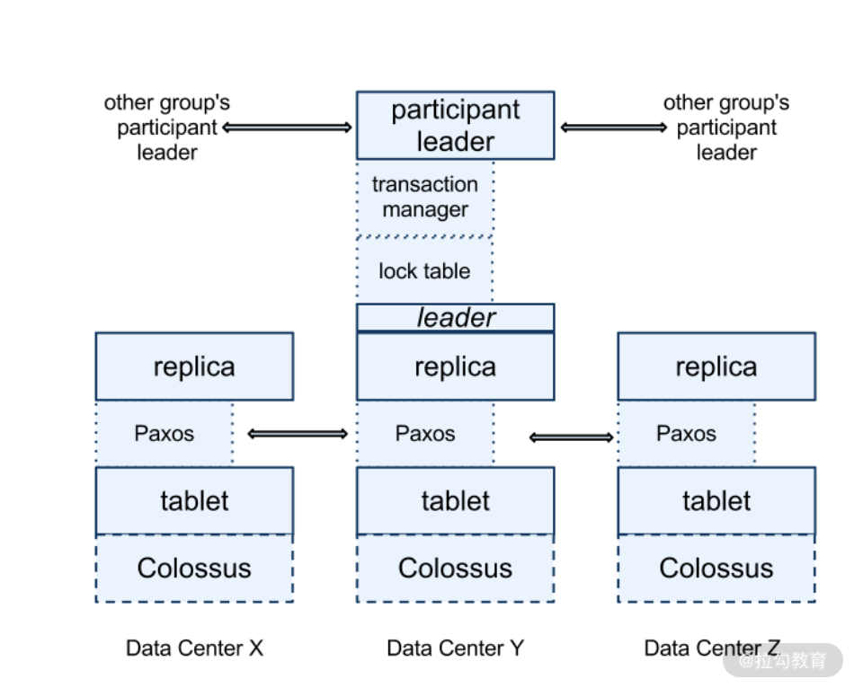

- 00 开篇词 吃透分布式数据库，提升职场竞争力.md.html
- 01 导论：什么是分布式数据库？聊聊它的前世今生.md.html
- 02 SQL vs NoSQL：一次搞清楚五花八门的“SQL”.md.html
- 03 数据分片：如何存储超大规模的数据？.md.html
- 04 数据复制：如何保证数据在分布式场景下的高可用？.md.html
- 05 一致性与 CAP 模型：为什么需要分布式一致性？.md.html
- 06 实践：设计一个最简单的分布式数据库.md.html
- 07 概要：什么是存储引擎，为什么需要了解它？.md.html
- 08 分布式索引：如何在集群中快速定位数据？.md.html
- 09 日志型存储：为什么选择它作为底层存储？.md.html
- 10 事务处理与恢复（上）：数据库崩溃后如何保证数据不丢失？.md.html
- 11 事务处理与恢复（下）：如何控制并发事务？.md.html
- 12 引擎拓展：解读当前流行的分布式存储引擎.md.html
- 13 概要：分布式系统都要解决哪些问题？.md.html
- 14 错误侦测：如何保证分布式系统稳定？.md.html
- 15 领导选举：如何在分布式系统内安全地协调操作？.md.html
- 16 再谈一致性：除了 CAP 之外的一致性模型还有哪些？.md.html
- 17 数据可靠传播：反熵理论如何帮助数据库可靠工作？.md.html
- 18 分布式事务（上）：除了 XA，还有哪些原子提交算法吗？.md.html
- 19 分布式事务（下）：Spanner 与 Calvin 的巅峰对决.md.html
- 20 共识算法：一次性说清楚 Paxos、Raft 等算法的区别.md.html
- 21 知识串讲：如何取得性能和可扩展性的平衡？.md.html
- 22 发展与局限：传统数据库在分布式领域的探索.md.html
- 23 数据库中间件：传统数据库向分布式数据库的过渡.md.html
- 24 现状解读：分布式数据库的最新发展情况.md.html
- 加餐1 概念解析：云原生、HTAP、图与内存数据库.md.html
- 加餐2 数据库选型：我们该用什么分布式数据库？.md.html
- 捐赠
19 分布式事务（下）：Spanner 与 Calvin 的巅峰对决
上一讲我们介绍了分布式事务最重要的概念——原子提交，并介绍了两阶段、三阶段提交和 Percolator 模型。
而这一讲我将要为你揭示目前业界最著名的两种分布式事务模型，同时它们的作者和追随者之间的论战又为这两种模型增加了一定的传奇性，这一讲让我们来看看它们最终谁能胜出呢？
首先，让我介绍一下参战的两位“选手”，它们分别是 Spanner 和 Calvin。它们背后分别有广泛引用的论文，可以说都拥有比较深厚的理论基础。那么我们先从 Spanner 开始说起。
Spanner 及其追随者
Spanner 最早来自 Google 的一篇论文，并最终成为 Google Cloud 的一个服务。Spanner 简单来讲是一种两阶段提交的实现，你可以回忆一下，上一讲中我介绍了两阶段提交 4 种失败场景，其中有一种是参与者准备阶段无响应，从而造成事务的可用性下降。而 Spanner
利用共识算法保证了每个分片（Shard）都是高可用的，从而提高了整体事务的可用性。
Spanner 的整体架构很复杂，包含的内容非常多。但核心主要是两个部分，分别是 TrueTime 和 Paxos Group，而这场论战也是针对其中的一个部分展开的。
TrueTime
我在模块三“13 | 概要：分布式系统都要解决哪些问题”中介绍过，分布式系统获取时间有两种方式：物理时间与逻辑时间。而由于物理时间不靠谱，分布式系统大部分使用逻辑时间。逻辑时间往往由一个节点生成时间戳，虽然已经很高效，但是如果要构建全球系统，这种设计就捉襟见肘了。
而 TrueTime 是一种逻辑与物理时间的融合，是由原子钟结合 IDC 本地时间生成的。区别于传统的单一时间点，TrueTime 的返回值是一个时间范围，数据操作可能发生在这个范围之内，故范围内的数据状态是不确定的（uncertainty）。系统必须等待一段时间，从而获得确定的系统状态。这段时间通常是比较短暂的，且多个操作可以并行执行，通常不会影响整体的吞吐量。
事务过程
Spanner 提供了三种事务模式。
- 读写事务：该事务是通过分布式锁实现的，并发性是最差的。且数据写入每个分片 Paxos Group 的主节点。
- 只读事务：该事务是无锁的，可以在任意副本集上进行读取。但是，如果想读到最新的数据，需要从主节点上进行读取。主节点可以从 Paxos Group 中获取最新提交的时间节点。
- 快照读：顾名思义，Spanner 实现了 MVCC 和快照隔离，故读取操作在整个事务内部是一致的。同时这也暗示了，Spanner 可以保存同一份数据的多个版本。
了解了事务模型后，我们深入其内部，看看 Spanner 的核心组件都有哪些。下面是一张 Spanner 的架构图。

其中我们看到，每个 replica 保存了多个 tablet；同时这些 replica 组成了 Paxos Group。Paxos Group 选举出一个 leader 用来在多分片事务中与其他 Paxos Group 的 leader 进行协调（有关 Paxos 算法的细节我将在下一讲中介绍）。
写入操作必须通过 leader 来进行，而读取操作可以在任何一个同步完成的 replica 上进行。同时我们看到 leader 中有锁管理器，用来实现并发控制中提到的锁管理。事务管理器用来处理多分片分布式事务。当进行同步写入操作时，必须要获取锁，而快照读取操作是无锁操作。
我们可以看到，最复杂的操作就是多分片的写入操作。其过程就是由 leader 参与的两阶段提交。在准备阶段，提交的数据写入到协调器的 Paxos Group 中，这解决了如下两个问题。
- 整个事务的数据是安全的。协调者崩溃不会影响到事务继续运行，我们可以从 Paxos Group 中恢复事务数据。
- 参与者崩溃不会影响事务。因为 Paxos Group 可以重新选择节点来继续执行未完成的事务操作。
在隔离方面，Spanner 实现了 SSI，也就是序列化的快照隔离。其方法就是上文提到的 lock table。该锁是完全的排他锁，不仅仅能阻止并发写入数据，写入也可以阻止读取，从而解决快照隔离写偏序的问题。
在整个过程中，事务开始时间和提交事务时间（数据可见时间）都是通过 TrueTime 获取的时间范围。Spanner 获取这些范围后，必须等待范围中描述的时间，而后才可以执行操作。否则，系统就会读取到不一致的数据。比如未能读取到当前时间之前的数据，或者读取到事务部分产生的数据等异常数据。
同时，Spanner 声明自己的事务特性是外部一致性（External Consistency）。其描述为首先并发的事务是序列化的，如上文所示，Spanner 实现了 SSI。同时它还是线性一致的，也就是“真实”时间下，事务 A 在事务 B 前提交，那么事务 A 的时间一定小于事务 B。对一致性部分掌握比较深的同学会发现，这就是我们在该部分提到的事务与一致性之间的联系。任何分布式数据库都要描述其事务特性（并发操作）与一致性特性（非并发操作），而 Spanner 所谓的外部一致就是序列化+线性一致。
Spanner 不仅仅有 Google Cloud 的一种商业产品可供大家选择，同样有众多开源数据库是源自 Spanner 的理念而设计的，如 CockroachDB、YugaByte DB 等。故Spanner 被认为是一类从开源到商业、本地部署到云端的成熟解决方案。
以上我讲解了 Spanner 的特性，下面接着看看它的对手 Calvin 的一些特点吧。
Calvin 与 FaunaDB
Spanner 引入了很多新技术去改善分布式事务的性能，但我们发现其流程整体还是传统的二阶段提交，并没有在结构上发生重大的改变，而 Calvin 却充满了颠覆性。让我们来看看它是怎么处理分布式事务的。
首先，传统分布式事务处理使用到了锁来保证并发竞争的事务满足隔离级别的约束。比如，序列化级别保证了事务是一个接一个运行的。而每个副本的执行顺序是无法预测的，但结果是可以预测的。Calvin 的方案是让事务在每个副本上的执行顺序达到一致，那么执行结果也肯定是一致的。这样做的好处是避免了众多事务之间的锁竞争，从而大大提高了高并发度事务的吞吐量。同时，节点崩溃不影响事务的执行。因为事务执行步骤已经分配，节点恢复后从失败处接着运行该事务即可，这种模式使分布式事务的可用性也大大提高。目前实现了 Calvin 事务模式的数据库是 FaunaDB。
其次，将事务进行排序的组件被称为 sequencer。它搜集事务信息，而后将它们拆解为较小的 epoch，这样做的目的是减小锁竞争，并提高并行度。一旦事务被准备好，sequencer 会将它们发送给 scheduler。scheduler 根据 sequencer 处理的结果，适时地并行执行部分事务步骤，同时也保证顺序执行的步骤不会被并行。因为这些步骤已经排好了顺序，scheduler 执行的时候不需要与 sequencer 进行交互，从而提高了执行效率。Calvin 事务的处理组件如下图所示。

Calvin 也使用了 Paxos 算法，不同于 Spanner 每个分片有一个 Paxos Group。Calvin 使用 Paxos 或者异步复制来决定哪个事务需要进入哪个 epoch 里面。
同时 Calvin 事务有 read set 和 write set 的概念。前者表示事务需要读取的数据，后者表示事务影响的数据。这两个集合需要在事务开始前就进行确定，故Calvin 不支持在事务中查询动态数据而后影响最终结果集的行为。这一点很重要，是这场战争的核心。
在你了解了两种事务模型之后，我就要带你进入“刺激战场”了。在两位实力相当的选手中，Calvin 一派首先挑起了战争。
对 Spanner 的批评
来自马里兰大学的 Daniel Abadi 教授是 Calvin 论文的联合作者、FaunaDB 的咨询师，可以说他非常有资格代表 Calvin 一派向 Spanner 发起挑战。
一开始 Abadi 教授主要探讨了 Spanner 和 Calvin 之间的架构带来的性能差异，他从如下几个方面给出了比较。
- 传统读写事务：如果是对于分片内部的事务（非分布式场景），两者的性能是类似的；但是对于跨分片，他认为 Calvin 的性能要远好于 Spanner。原因是 Spanner 相对来说有两点性能损耗，第一就是 TrueTime 返回的是时间范围，我们必须等待一段时间后才可以做提交操作，当然这部分是可以并行的；第二就是 Spanner 是两阶段提交，相比于 Calvin 的“一阶段”来讲，理论上延迟会高。
- 快照读：这部分两者原理类似，故延迟都不高。
- 只读事务：这部分就是 Spanner 要更高效。因为它只从 leader 节点去读取数据，而 Calvin 做全局的一致性读，故延迟更大。
除了以上的比较，Calvin 还在日志复制上存在优势。主要是 Spanner 的日志复制也是 Paxos 过程，而 Calvin 由于预处理加持，可以简单高效地进行复制。这种优势在理论上随着节点间物理距离的扩展而变得更加明显。
当然，我们知道 Calvin 提到了它的预处理机制会限制事务内的操作，这个限制 Abadi 教授也注意到了。
以上就是 Abadi 教授在两者性能方面的比较，其论调还是比较客观中立，且冲突性不强。但紧接着，他指出了 Spanner 一个非常具有争议的问题，这个问题关系到了 TrueTime。TrueTime 由于不是在理论层面上证明它的时间不会倒流（skew），而是通过大量的工程实践证明了这种可能性非常低。而这个概率就是一个攻击点。
教授在这里比较聪明，或可以说是明智。他没有攻击 TrueTime 本身，而是表明 TrueTime 由于依赖原子钟这种硬件，提高了其他人复制该技术的难度。从而引出了一个技术圈的老话题——Google 的技术出了 Google 就失效了。
而 Abadi 要挑战的就是基于 Spanner 想法的其他开源或商业数据库，如上文提到的 CockroachDB 和 YugaByteDB。它们的 TrueTime 是用软件实现的，相比于硬件，上文描述的时间倒流概率被提高了。CockroachDB 还好，它声明了这种异常的可能；而 YugaByte 却没有，故它被教授集中火力攻击。
最后教授提到了，Calvin 和 FaunaDB 在理论层面上证明了其可以很好地实现一致性。
既然 Calvin 引战，特别是主要集中在 YugaByteDB 上，于是后者发起了绝地反击。
Spanner 追随者的反击
既然 YugaByte“祸从天上来”，那么必然由它们发起反击。
上文中，教授的观点总结为：
- 性能上，Calvin 由于锁持有时间短，吞吐量会大于 Spanner；
- 一致性上，基于硬件的 TrueTime 具有一定概率会发生时间倒流，而软件实现的“TrueTime”更是无法保证时间单调递增。
针对第一个问题，YugaByte 首先承认了 Calvin 吞吐量的优势。但是画风一转，YugaByte 抛出了著名的分布式事务模式研究，该研究通过多 AWS Dynamo 用户使用事务的模式进行分析。得出的结论是：90%的事务是发生在单行和单分片的，只有 10%左右才是多分片的。据此，YugaByte 把前者称为主要负载，后者称为次要负载。
那么在主要负载方面，上文中教授也承认 Spanner 和 Calvin 性能间没有明显差别，而 Calvin 具有优势的场景变为了次要负载。我们都听说过，“脱离剂量谈毒性都是耍流氓”。而 Calvin 的优势却在次要负载上，这大大降低了该优势的重要程度。
而第二个问题其实才是核心问题。我很欣赏此处 YugaByte 没有回避，而是大方地承认 YugaByte 等软件实现 TrueTime 的模式无法做到如 Calvin 那种严格序列化，而是所谓“最大可能”序列化。一旦 TrueTime 时间范围超过了阈值，序列化就被破坏了。但是 YugaByte 指出了两点让用户去思考：
- 上文中主要负载场景两者都不会有一致性问题，只有在次要场景 Spanner 类方案才会有问题；
- 随着 AWS、阿里云等公有云服务逐步提供原子钟服务，YugaByte 这类数据库也可以使用真正的 TrueTime，这大大降低了发生时间倒流的概率。
从以上的解释看出，软件的 NTP 计时器确实存在问题，但如果用户场景对此要求不严格，也是可以使用的。
除了上面针对教授提到的问题，YugaByte 也提出了 Calvin 类数据库的一些较为“致命”的缺陷。
- 上文教授已经承认的读性能 Calvin 是要弱于 Spanner 的。
- 静态化的 write set 和 read set 导致了二级索引和会话内事务的问题。会话内事务我们上文提到过，简单说 Calvin 的事务的写入不能依赖于事务内的读取；而二级索引的列如果频繁修改，会导致 Calvin 的事务反复重试，从而降低吞吐量。
- Calvin 另一个缺憾就是其缺乏开源的实现。目前只有 FaunaDB 这个闭源商业版本，使得习惯使用开源技术栈的用户没有别的选择。
- FaunaDB 没有使用 SQL，而是使用了一个 GraphQL 风格的新语言 FQL。这为原本使用 SQL 语言的团队切换到 FaunaDB 上带来了很大挑战。
可以看到 YugaByte 团队针对其批评也给出了自己的回应，那么他们之间的争论有确定的结果吗？
谁胜利了？
从目前发展的角度来说，并没有一方可以完全替代另一方。Calvin 在高度竞争的事务场景中有明显优势，而 Spanner 在读取、会话内事务中的优势不可代替。从它们的原理看，谁最终也无法胜出。而我们其实也不期待一个最终赢家，而是希望未来的事务模型能够从这两个模式中吸取灵感，为我们带来更高效的分布式事务解决方案 。
到此，我们用了两讲的内容，详细介绍了面向数据库的分布式事务。下一讲要说的是模块三的最后一个知识点：共识算法。它是现代分布式系统的核心算法，希望到时和你准时相见。
© 2019 - 2023 Liangliang Lee. Powered by gin and hexo-theme-book.